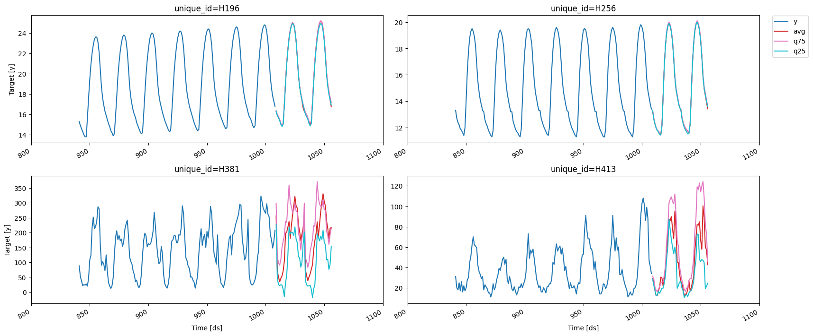
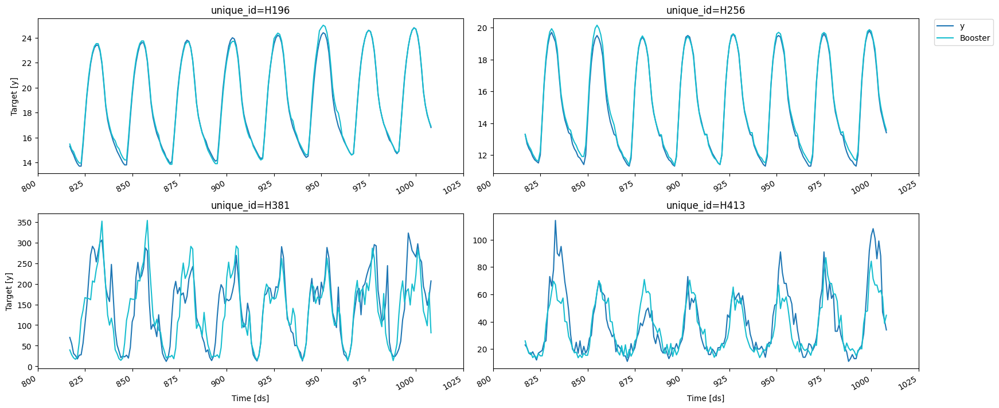

import random
import pandas as pd
from datasetsforecast.m4 import M4
from utilsforecast.plotting import plot_seriesEnd to end walkthrough
Detailed description of all the functionalities that MLForecast provides.
Data setup
For this example we’ll use a subset of the M4 hourly dataset. You can find the a notebook with the full dataset here.
await M4.async_download('data', group='Hourly')
df, *_ = M4.load('data', 'Hourly')
uids = df['unique_id'].unique()
random.seed(0)
sample_uids = random.choices(uids, k=4)
df = df[df['unique_id'].isin(sample_uids)].reset_index(drop=True)
df['ds'] = df['ds'].astype('int64')
df| unique_id | ds | y | |
|---|---|---|---|
| 0 | H196 | 1 | 11.8 |
| 1 | H196 | 2 | 11.4 |
| 2 | H196 | 3 | 11.1 |
| 3 | H196 | 4 | 10.8 |
| 4 | H196 | 5 | 10.6 |
| ... | ... | ... | ... |
| 4027 | H413 | 1004 | 99.0 |
| 4028 | H413 | 1005 | 88.0 |
| 4029 | H413 | 1006 | 47.0 |
| 4030 | H413 | 1007 | 41.0 |
| 4031 | H413 | 1008 | 34.0 |
4032 rows × 3 columns
EDA
We’ll take a look at our series to get ideas for transformations and features.
fig = plot_series(df, max_insample_length=24 * 14)
We can use the MLForecast.preprocess method to explore different transformations. It looks like these series have a strong seasonality on the hour of the day, so we can subtract the value from the same hour in the previous day to remove it. This can be done with the mlforecast.target_transforms.Differences transformer, which we pass through target_transforms.
from mlforecast import MLForecast
from mlforecast.target_transforms import Differencesfcst = MLForecast(
models=[], # we're not interested in modeling yet
freq=1, # our series have integer timestamps, so we'll just add 1 in every timestep
target_transforms=[Differences([24])],
)
prep = fcst.preprocess(df)
prep| unique_id | ds | y | |
|---|---|---|---|
| 24 | H196 | 25 | 0.3 |
| 25 | H196 | 26 | 0.3 |
| 26 | H196 | 27 | 0.1 |
| 27 | H196 | 28 | 0.2 |
| 28 | H196 | 29 | 0.2 |
| ... | ... | ... | ... |
| 4027 | H413 | 1004 | 39.0 |
| 4028 | H413 | 1005 | 55.0 |
| 4029 | H413 | 1006 | 14.0 |
| 4030 | H413 | 1007 | 3.0 |
| 4031 | H413 | 1008 | 4.0 |
3936 rows × 3 columns
This has subtacted the lag 24 from each value, we can see what our series look like now.
fig = plot_series(prep)
Adding features
Lags
Looks like the seasonality is gone, we can now try adding some lag features.
fcst = MLForecast(
models=[],
freq=1,
lags=[1, 24],
target_transforms=[Differences([24])],
)
prep = fcst.preprocess(df)
prep| unique_id | ds | y | lag1 | lag24 | |
|---|---|---|---|---|---|
| 48 | H196 | 49 | 0.1 | 0.1 | 0.3 |
| 49 | H196 | 50 | 0.1 | 0.1 | 0.3 |
| 50 | H196 | 51 | 0.2 | 0.1 | 0.1 |
| 51 | H196 | 52 | 0.1 | 0.2 | 0.2 |
| 52 | H196 | 53 | 0.1 | 0.1 | 0.2 |
| ... | ... | ... | ... | ... | ... |
| 4027 | H413 | 1004 | 39.0 | 29.0 | 1.0 |
| 4028 | H413 | 1005 | 55.0 | 39.0 | -25.0 |
| 4029 | H413 | 1006 | 14.0 | 55.0 | -20.0 |
| 4030 | H413 | 1007 | 3.0 | 14.0 | 0.0 |
| 4031 | H413 | 1008 | 4.0 | 3.0 | -16.0 |
3840 rows × 5 columns
prep.drop(columns=['unique_id', 'ds']).corr()['y']y 1.000000
lag1 0.622531
lag24 -0.234268
Name: y, dtype: float64Lag transforms
Lag transforms are defined as a dictionary where the keys are the lags and the values are lists of functions that transform an array. These must be numba jitted functions (so that computing the features doesn’t become a bottleneck). There are some implemented in the window-ops package but you can also implement your own.
If the function takes two or more arguments you can either:
- supply a tuple (tfm_func, arg1, arg2, …)
- define a new function fixing the arguments
from numba import njit
from window_ops.expanding import expanding_mean
from window_ops.rolling import rolling_mean@njit
def rolling_mean_48(x):
return rolling_mean(x, window_size=48)
fcst = MLForecast(
models=[],
freq=1,
target_transforms=[Differences([24])],
lag_transforms={
1: [expanding_mean],
24: [(rolling_mean, 48), rolling_mean_48],
},
)
prep = fcst.preprocess(df)
prep| unique_id | ds | y | expanding_mean_lag1 | rolling_mean_lag24_window_size48 | rolling_mean_48_lag24 | |
|---|---|---|---|---|---|---|
| 95 | H196 | 96 | 0.1 | 0.174648 | 0.150000 | 0.150000 |
| 96 | H196 | 97 | 0.3 | 0.173611 | 0.145833 | 0.145833 |
| 97 | H196 | 98 | 0.3 | 0.175342 | 0.141667 | 0.141667 |
| 98 | H196 | 99 | 0.3 | 0.177027 | 0.141667 | 0.141667 |
| 99 | H196 | 100 | 0.3 | 0.178667 | 0.141667 | 0.141667 |
| ... | ... | ... | ... | ... | ... | ... |
| 4027 | H413 | 1004 | 39.0 | 0.242084 | 3.437500 | 3.437500 |
| 4028 | H413 | 1005 | 55.0 | 0.281633 | 2.708333 | 2.708333 |
| 4029 | H413 | 1006 | 14.0 | 0.337411 | 2.125000 | 2.125000 |
| 4030 | H413 | 1007 | 3.0 | 0.351324 | 1.770833 | 1.770833 |
| 4031 | H413 | 1008 | 4.0 | 0.354018 | 1.208333 | 1.208333 |
3652 rows × 6 columns
You can see that both approaches get to the same result, you can use whichever one you feel most comfortable with.
Date features
If your time column is made of timestamps then it might make sense to extract features like week, dayofweek, quarter, etc. You can do that by passing a list of strings with pandas time/date components. You can also pass functions that will take the time column as input, as we’ll show here.
def hour_index(times):
return times % 24
fcst = MLForecast(
models=[],
freq=1,
target_transforms=[Differences([24])],
date_features=[hour_index],
)
fcst.preprocess(df)| unique_id | ds | y | hour_index | |
|---|---|---|---|---|
| 24 | H196 | 25 | 0.3 | 1 |
| 25 | H196 | 26 | 0.3 | 2 |
| 26 | H196 | 27 | 0.1 | 3 |
| 27 | H196 | 28 | 0.2 | 4 |
| 28 | H196 | 29 | 0.2 | 5 |
| ... | ... | ... | ... | ... |
| 4027 | H413 | 1004 | 39.0 | 20 |
| 4028 | H413 | 1005 | 55.0 | 21 |
| 4029 | H413 | 1006 | 14.0 | 22 |
| 4030 | H413 | 1007 | 3.0 | 23 |
| 4031 | H413 | 1008 | 4.0 | 0 |
3936 rows × 4 columns
Target transformations
If you want to do some transformation to your target before computing the features and then re-apply it after predicting you can use the target_transforms argument, which takes a list of transformations. You can find the implemented ones in mlforecast.target_transforms or you can implement your own as described in the target transformations guide.
from mlforecast.target_transforms import LocalStandardScalerfcst = MLForecast(
models=[],
freq=1,
lags=[1],
target_transforms=[LocalStandardScaler()]
)
fcst.preprocess(df)| unique_id | ds | y | lag1 | |
|---|---|---|---|---|
| 1 | H196 | 2 | -1.493026 | -1.383286 |
| 2 | H196 | 3 | -1.575331 | -1.493026 |
| 3 | H196 | 4 | -1.657635 | -1.575331 |
| 4 | H196 | 5 | -1.712505 | -1.657635 |
| 5 | H196 | 6 | -1.794810 | -1.712505 |
| ... | ... | ... | ... | ... |
| 4027 | H413 | 1004 | 3.062766 | 2.425012 |
| 4028 | H413 | 1005 | 2.523128 | 3.062766 |
| 4029 | H413 | 1006 | 0.511751 | 2.523128 |
| 4030 | H413 | 1007 | 0.217403 | 0.511751 |
| 4031 | H413 | 1008 | -0.126003 | 0.217403 |
4028 rows × 4 columns
We can define a naive model to test this
from sklearn.base import BaseEstimator
class Naive(BaseEstimator):
def fit(self, X, y):
return self
def predict(self, X):
return X['lag1']fcst = MLForecast(
models=[Naive()],
freq=1,
lags=[1],
target_transforms=[LocalStandardScaler()]
)
fcst.fit(df)
preds = fcst.predict(1)
preds| unique_id | ds | Naive | |
|---|---|---|---|
| 0 | H196 | 1009 | 16.8 |
| 1 | H256 | 1009 | 13.4 |
| 2 | H381 | 1009 | 207.0 |
| 3 | H413 | 1009 | 34.0 |
We compare this with the last values of our serie
last_vals = df.groupby('unique_id').tail(1)
last_vals| unique_id | ds | y | |
|---|---|---|---|
| 1007 | H196 | 1008 | 16.8 |
| 2015 | H256 | 1008 | 13.4 |
| 3023 | H381 | 1008 | 207.0 |
| 4031 | H413 | 1008 | 34.0 |
import numpy as npnp.testing.assert_allclose(preds['Naive'], last_vals['y'])Training
Once you’ve decided the features, transformations and models that you want to use you can use the MLForecast.fit method instead, which will do the preprocessing and then train the models. The models can be specified as a list (which will name them by using their class name and an index if there are repeated classes) or as a dictionary where the keys are the names you want to give to the models, i.e. the name of the column that will hold their predictions, and the values are the models themselves.
import lightgbm as lgblgb_params = {
'verbosity': -1,
'num_leaves': 512,
}
fcst = MLForecast(
models={
'avg': lgb.LGBMRegressor(**lgb_params),
'q75': lgb.LGBMRegressor(**lgb_params, objective='quantile', alpha=0.75),
'q25': lgb.LGBMRegressor(**lgb_params, objective='quantile', alpha=0.25),
},
freq=1,
target_transforms=[Differences([24])],
lags=[1, 24],
lag_transforms={
1: [expanding_mean],
24: [(rolling_mean, 48)],
},
date_features=[hour_index],
)
fcst.fit(df)MLForecast(models=[avg, q75, q25], freq=1, lag_features=['lag1', 'lag24', 'expanding_mean_lag1', 'rolling_mean_lag24_window_size48'], date_features=[<function hour_index>], num_threads=1)This computed the features and trained three different models using them. We can now compute our forecasts.
Forecasting
preds = fcst.predict(48)
preds| unique_id | ds | avg | q75 | q25 | |
|---|---|---|---|---|---|
| 0 | H196 | 1009 | 16.295257 | 16.385859 | 16.320666 |
| 1 | H196 | 1010 | 15.910282 | 16.012728 | 15.856905 |
| 2 | H196 | 1011 | 15.728367 | 15.784867 | 15.656658 |
| 3 | H196 | 1012 | 15.468414 | 15.503223 | 15.401462 |
| 4 | H196 | 1013 | 15.081279 | 15.163606 | 15.048576 |
| ... | ... | ... | ... | ... | ... |
| 187 | H413 | 1052 | 100.450617 | 116.461898 | 52.276952 |
| 188 | H413 | 1053 | 88.426800 | 114.257158 | 50.866960 |
| 189 | H413 | 1054 | 59.675737 | 89.672526 | 16.440738 |
| 190 | H413 | 1055 | 57.580356 | 84.680943 | 14.248400 |
| 191 | H413 | 1056 | 42.669879 | 52.000559 | 12.440984 |
192 rows × 5 columns
fig = plot_series(df, preds, max_insample_length=24 * 7)
Updating series’ values
After you’ve trained a forecast object you can save it and load it to use later using pickle or cloudpickle. If by the time you want to use it you already know the following values of the target you can use the MLForecast.ts.update method to incorporate these, which will allow you to use these new values when computing predictions.
- If no new values are provided for a serie that’s currently stored, only the previous ones are kept.
- If new series are included they are added to the existing ones.
fcst = MLForecast(
models=[Naive()],
freq=1,
lags=[1, 2, 3],
)
fcst.fit(df)
fcst.predict(1)| unique_id | ds | Naive | |
|---|---|---|---|
| 0 | H196 | 1009 | 16.8 |
| 1 | H256 | 1009 | 13.4 |
| 2 | H381 | 1009 | 207.0 |
| 3 | H413 | 1009 | 34.0 |
new_values = pd.DataFrame({
'unique_id': ['H196', 'H256'],
'ds': [1009, 1009],
'y': [17.0, 14.0],
})
fcst.ts.update(new_values)
preds = fcst.predict(1)
preds| unique_id | ds | Naive | |
|---|---|---|---|
| 0 | H196 | 1010 | 17.0 |
| 1 | H256 | 1010 | 14.0 |
| 2 | H381 | 1009 | 207.0 |
| 3 | H413 | 1009 | 34.0 |
Estimating model performance
Cross validation
In order to get an estimate of how well our model will be when predicting future data we can perform cross validation, which consist on training a few models independently on different subsets of the data, using them to predict a validation set and measuring their performance.
Since our data depends on time, we make our splits by removing the last portions of the series and using them as validation sets. This process is implemented in MLForecast.cross_validation.
fcst = MLForecast(
models=lgb.LGBMRegressor(**lgb_params),
freq=1,
target_transforms=[Differences([24])],
lags=[1, 24],
lag_transforms={
1: [expanding_mean],
24: [(rolling_mean, 48)],
},
date_features=[hour_index],
)
cv_result = fcst.cross_validation(
df,
n_windows=4, # number of models to train/splits to perform
h=48, # length of the validation set in each window
)
cv_result| unique_id | ds | cutoff | y | LGBMRegressor | |
|---|---|---|---|---|---|
| 0 | H196 | 817 | 816 | 15.3 | 15.383165 |
| 1 | H196 | 818 | 816 | 14.9 | 14.923219 |
| 2 | H196 | 819 | 816 | 14.6 | 14.667834 |
| 3 | H196 | 820 | 816 | 14.2 | 14.275964 |
| 4 | H196 | 821 | 816 | 13.9 | 13.973491 |
| ... | ... | ... | ... | ... | ... |
| 187 | H413 | 1004 | 960 | 99.0 | 65.644823 |
| 188 | H413 | 1005 | 960 | 88.0 | 71.717097 |
| 189 | H413 | 1006 | 960 | 47.0 | 76.704377 |
| 190 | H413 | 1007 | 960 | 41.0 | 53.446638 |
| 191 | H413 | 1008 | 960 | 34.0 | 54.902634 |
768 rows × 5 columns
fig = plot_series(cv_result, cv_result.drop(columns='cutoff'), max_insample_length=0)
We can compute the RMSE on each split.
from utilsforecast.losses import rmsedef evaluate_cv(df):
return rmse(df, models=['LGBMRegressor'], id_col='cutoff').set_index('cutoff')
split_rmse = evaluate_cv(cv_result)
split_rmse| LGBMRegressor | |
|---|---|
| cutoff | |
| 816 | 29.418172 |
| 864 | 34.257598 |
| 912 | 13.145763 |
| 960 | 35.066261 |
And the average RMSE across splits.
split_rmse.mean()LGBMRegressor 27.971949
dtype: float64You can quickly try different features and evaluate them this way. We can try removing the differencing and using an exponentially weighted average of the lag 1 instead of the expanding mean.
from window_ops.ewm import ewm_meanfcst = MLForecast(
models=lgb.LGBMRegressor(**lgb_params),
freq=1,
lags=[1, 24],
lag_transforms={
1: [(ewm_mean, 0.5)],
24: [(rolling_mean, 48)],
},
date_features=[hour_index],
)
cv_result2 = fcst.cross_validation(
df,
n_windows=4,
h=48,
)
evaluate_cv(cv_result2).mean()LGBMRegressor 25.874446
dtype: float64LightGBMCV
In the same spirit of estimating our model’s performance, LightGBMCV allows us to train a few LightGBM models on different partitions of the data. The main differences with MLForecast.cross_validation are:
- It can only train LightGBM models.
- It trains all models simultaneously and gives us per-iteration averages of the errors across the complete forecasting window, which allows us to find the best iteration.
from mlforecast.lgb_cv import LightGBMCVcv = LightGBMCV(
freq=1,
target_transforms=[Differences([24])],
lags=[1, 24],
lag_transforms={
1: [expanding_mean],
24: [(rolling_mean, 48)],
},
date_features=[hour_index],
num_threads=2,
)
cv_hist = cv.fit(
df,
n_windows=4,
h=48,
params=lgb_params,
eval_every=5,
early_stopping_evals=5,
compute_cv_preds=True,
)[5] mape: 0.158639
[10] mape: 0.163739
[15] mape: 0.161535
[20] mape: 0.169491
[25] mape: 0.163690
[30] mape: 0.164198
Early stopping at round 30
Using best iteration: 5As you can see this gives us the error by iteration (controlled by the eval_every argument) and performs early stopping (which can be configured with early_stopping_evals and early_stopping_pct). If you set compute_cv_preds=True the out-of-fold predictions are computed using the best iteration found and are saved in the cv_preds_ attribute.
cv.cv_preds_| unique_id | ds | y | Booster | window | |
|---|---|---|---|---|---|
| 0 | H196 | 817 | 15.3 | 15.473182 | 0 |
| 1 | H196 | 818 | 14.9 | 15.038571 | 0 |
| 2 | H196 | 819 | 14.6 | 14.849409 | 0 |
| 3 | H196 | 820 | 14.2 | 14.448379 | 0 |
| 4 | H196 | 821 | 13.9 | 14.148379 | 0 |
| ... | ... | ... | ... | ... | ... |
| 187 | H413 | 1004 | 99.0 | 61.425396 | 3 |
| 188 | H413 | 1005 | 88.0 | 62.886890 | 3 |
| 189 | H413 | 1006 | 47.0 | 57.886890 | 3 |
| 190 | H413 | 1007 | 41.0 | 38.849009 | 3 |
| 191 | H413 | 1008 | 34.0 | 44.720562 | 3 |
768 rows × 5 columns
fig = plot_series(cv.cv_preds_, cv.cv_preds_.drop(columns='window'), max_insample_length=0)
You can use this class to quickly try different configurations of features and hyperparameters. Once you’ve found a combination that works you can train a model with those features and hyperparameters on all the data by creating an MLForecast object from the LightGBMCV one as follows:
final_fcst = MLForecast.from_cv(cv)
final_fcst.fit(df)
preds = final_fcst.predict(48)
fig = plot_series(df, preds, max_insample_length=24 * 14)
Give us a ⭐ on Github